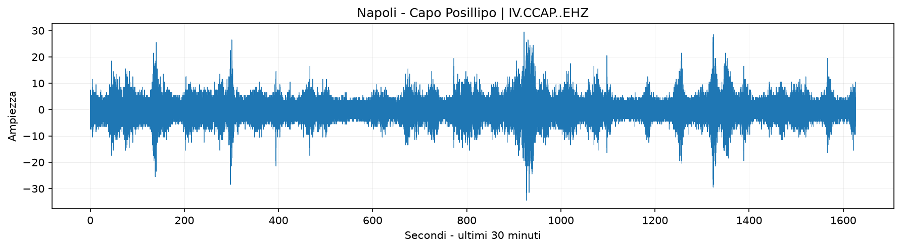
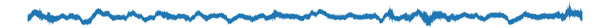
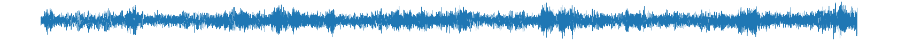
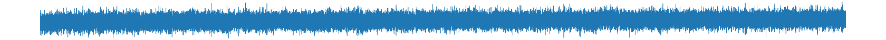

🏙️ Napoli
Sismografo principale

Stazione: IV.CCAP • Capo Posillipo
Aggiornamento: --
Consulta i tracciati delle stazioni sismiche disponibili sul territorio italiano.
Monitoraggio dei principali sismografi e dei parametri vulcanici dell'area napoletana.
Sismografo principale

Sismografo principale

Stato del monitoraggio sismico e vulcanico.

Parametri disponibili relativi all'attività fumarolica.
